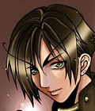
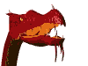
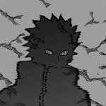
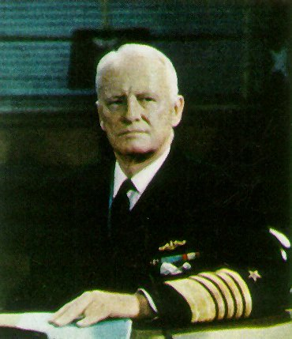
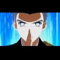
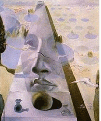
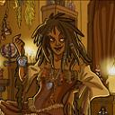

Forums galactiques > Assemblée Galactique : diplomatie officielle > Passage obligé : Présentations
Pages : 1 2 ... 7 8 9 ... 40 41
| Naru Respect diplomatique : 3 28/07 ETU 01:17 | Score : 3 Détails Naru s'avança avec un petit sourire timide. Elle leva les yeux au ciel et observa durant quelques secondes le ciel. Lorsqu'elle rabaissa la tête, ses sourcils se froncèrent et parla dans le micro devant ses yeux.
" Bonjour à tous, je me nomme Naru. J'arrive juste à l'assemblée, simplement pour vous montrer mon arrivée et me présenter au yeux de tous. Je suis issue d'une petite planète et mon peuple, en a un peu marre du voyage, c'est pour cela que je fais un bref passage pour lui permettre de se reposer quelque peu. Excusez se court passage. Bonne fin de soirée à tous au milieu des étoiles." Elle recula et s'en alla rejoindre son peuple. Edit : je recherche une coalition. Pour information je suis commerçante. | ||
| Bror Amalsy Respect diplomatique : 2  01/08 ETU 18:23 | Score : 2 Détails Bror hocha la tête d'un air visiblement agacé en voyant l'inscription "passage obligé".La discrétion et le fait de rester le plus possible inconnu était un avantage militaire.Mais autant se plier aux coutume locales.
Visiblement réticent,Bror déclara: "Bonjour commandants,je suis le Commandant en second des forces intergalactiques Thyphériennes,récemment promu à ce poste,j'ai été chargé de venir ici.Je vous rassure,la seul chose qui pourait me faire lever les armes,,c'est une attaque contre nos planètes ou une tentative pour nou senlever notre liberté.Bien à vous." Bror partit sur le champs,il serait bien assez tot mettre une description sur chaque visage. | ||
| vlad Respect diplomatique : 411  02/08 ETU 16:53 | Score : 5 Détails Lorsque vlad s'avança pour la première fois à l'assemblée, le silence ce fit. Les quelques commandants hardis qui osèrent poser leur regard sur lui furent sans voix en voyant cet homme dissimulé sous une grande cape noire, ne laissant apparaitre que deux yeux rouges remplis de haine. Au bout de quelques pas vlad s'arreta, posa sa main sur la table et dit:
"preparez vous, des jours sombres vont bientot arriver ou il vous faudra faire un choix, être de mon coté ou mourrir" puis vlad reparti sans un mot, les autre commandants furent subjugués par son discours mais surtout par l'audace de ce commandant dont ils n'avaient jamais eu vent. Cependant, une fois Vlad reparti, tous les autres commandants aussi fier soient-ils ne pouvaient nier que ce "Vlad" leur avait fait froid dans le dos.. | ||
| Seigneur Grimaldus Respect diplomatique : 806  02/08 ETU 18:21 | Score : 1 Détails Aucun sentiment ne se refléta dans le masque de Grimaldus,ni dans son hatitude.
"être de mon coté ou mourrir... Il ne me reste plus qu'à espérer pour vous que votre coté est le même que le mien, commandant... Car je n'ai pas l'intention de mourir tout de suite... Dans le genre, c'est plutot moi qui donne la mort... Enfin, bienvenue quand même." | ||
| Scorp Respect diplomatique : 4  02/08 ETU 19:04 | Score : 3 Détails Parmis l'assemblée rempli de commandants, on pouvait noter la présence d'un jeune dragon rouge à l'activité quelque peut sanguinaire.
Son passe temps pouvait se résumer à une gaminerie quelque peu barbare. En effet, il s'agissait d'embrocher sur ses ongles ses esclaves elfes, puis, de les grillr d'une seule et unique flamme avant de les avaler en tant que petites gatteries. Ce dragon, qui répondait au nom de Scorp, ne semblait pas bien intéréssé par les défilés de commandants qui se présentaient, et préférait rester assis à sa place. Au bout de quelques heures, et étant lassé de son petit jeu, Scorp sortit, sans dire un seul mot, ne daignant pas se présenter. | ||
| Karctak Respect diplomatique : 11  03/08 ETU 19:12 | Score : 10 Détails Un commandant vétu d'une grande cape rouge et noir aux motifs étranges et varié entra dans la grande salle qui lui semblait être l'oratoire. il ne ce fit pas remarqué tout de suite préférant observer ce nouveau "monde". Il décida enfin de prendre la parole en expliquant son parcours parmi les galaxies. Il commença son récit ...:
Chère Commandants et commandantes... Mon nom est Karctak. Je viens d'une galaxie lointaine avec laquelle j'ai perdu tout contact depuis le dernière hiver nucléaire qu'elle a connu et le plus destructeur de tous... Nous autres les membres de cette galaxie avons détruit et rebattit des mondes entiers mais la galaxie "Espoire", comme nos dirigeants l'avaient surnommée, ne c'est pas relevé de cette apocalypse opposant les plus grand de l'univers connu a cette époque. Mon royaume était loin d'être le plus grand ce qui me permit de réunir tout le monde et de fuir avec mes sujets les plus fidèles. Malheureusement le voyage fut long...trop long et de nombreux vaisseaux , ethnies et même races furent détruit de divers manière . Certains engouffrés dans les trous noir et d'autres atteint par le mal galactique comme on l'appel... Bref je suis donc arrivé ici avec un seul et unique vaisseaux et juste assez de civile pour repeupler une planète ce qui est peu mais mieux que rien. Mes émissaires m'ont rapporté il y a quelques heures qu'il y avait ici aussi une assemblée regroupant les commandants souhaitant s'exprimer. Peu être retrouverais-je quelques commandants de l'époque qui sais ! un sourire ce dessina sur le visage fatigué du jeune homme Sur ce je passe un appel a tout ceux qui me reconnaîtrons ou tout ceux qui on entendu parlé de moi s'ils peuvent me donner des informations ou de l'aide pour la reconstruction d'une vie nouvelle pour mon peuple. Merci d'avance a tous pour m'avoir écouté. Au revoir Le commandant ce retira suivi d'un homme resté dans l'ombre tout ce temps , celui-ci n'avait malheureusement plus rien d'humain... | ||
| Noritada Respect diplomatique : 22  04/08 ETU 14:18 | Score : 4 Détails Le champ holographique se brouille légerement, laissant apparaitre la sillouhette mince d'un jeune diplomate. Il est habillé sobrement, tout de noir, mais l'on distingue dans cette sobriété une grande élégance. Le jeune diplomate semble porter a la ceinture un petit sabre asiatique et la moitiée gauche de son visage est cachée par une moitiée de masque, rouge et blanche, au motifs souples et sybillins. Ces longs cheveux blancs flottent librement dèrrière lui et se s'agitent au moindre de ses mouvements. Le jeune homme semble sourire légerement. Il s'incline respectueusement devant l'assemblée et se relève.
" Je suis le comandant Noritada, et j'ai prit au nom de l'alliance les rènes de ma planète, Toshi Ranbo. Je n'ait pas eu le temps de venir plus tot en raison du chaos qui régnait sur ma planète il y a peu. " | ||
| CHARON Respect diplomatique : 1 04/08 ETU 17:00 | Score : 0 Détails Discretement, mais avec assurance, Charon, ainsi nomme en hommage au passeur du Styx, marche avec une aisanc, confirme par un leger sourire .
Il a en effet envoye en enfer bon nombre d inconnus pour le plaisir dans sa jeunesse. Apres le drame universel, il s est retrouve a la tete d une bande de mercenaires sur Arobaze, systeme 427. Il a alors decide de profiter de la situation pour prendre le pouvoir, sauver sa population et redonner l espoir aux arobasiens. Il a pris le contrôle de la planete apres avoir assouvi les derniers reluctants. Je n’ai rassemble que quelques planetes. Je pense que ma technologie et ma flotte militaire me permettent desormais de m agrandir. Je n’ai pas de velleites invasionnistes. Il me faut quelques planetes de plus pour que mon peuple se sente plus en securite. Je suis prêt a discuter, voire a m’allier avec quelqu’un pour etre plus respecte. Celui qui acceptera de m’aider n’aura pas affaire a un ingrat, le jour ou il faudra prendre les armes. Je remercie ceux qui m’ont ecoute, quelque soit leur decision, et je meprise les autres. Je suis avant tout un guerrier reconverti plein de loyaute et de courage, mais je n’apprecie guere etre moque…. CHARON | ||
| nimitz Respect diplomatique : 19  04/08 ETU 19:23 | Score : 8 Détails Les transmissions holographiques de la salle de présentation des nouveaux commandants furent interrompues. Il s'agissait, sans doute, d'un dysfonctionnement du réseau de communication de l'assemblée, qui venait d'intercepter une émission, qui ne lui était pas destinée. Les écrans devinrent noirs et une image de mauvaise qualité apparue. On pouvait y voir la passerrelle de commandement d'un vaisseau de guerre, où un vieil homme, vêtu d'un uniforme, visiblement haut gradé, était en conversation radiophonique sub-spatiale.
-"Surface à l'amiral Nimitz répondez!!!" -"Croiseur léger Omaha à surface, c'est l'amiral Nimitz qui vous parle, que se passe t'il ?" -"C'est une catastrophe, un cataclysme, les morts se comptent par millions, par milliards, aidez nous..." -"Bon sang, calmez vous!!! Que se passe t'il, tout allait pourtant bien quand je suis parti, il y a peine une semaine." -"C'est le président Bush monsieur, il a poursuivi sa guerre contre le terrorisme international." -"C'est pas vrai, je lui avais dit d'attendre mon retour avant de prendre une initiative. Qu'est ce qu'il a encore fait ?" -"C'est à dire que... euh... Il a declenché une ... une guerre monsieur." -"Quoi!!! En une semaine!!! Mais il est vraiment c.. Enfin je veux dire contre qui ?" -"Et bien... euh... contre tout le monde monsieur, c'est une guerre... atomique monsieur." -"..." -"Monsieur ? Vous êtes toujours là monsieur ?" -"Oui, oui, mais où est il maintenant ?" -"Il est mort monsieur, comme 90% de la population. Quelques rares personnes ont reussi à se réfugier dans les abris et d'autres encore plus rares ont survécus à la surface, mais c'est le chaos ici monsieur, il faudrait que vous puissiez faire quelque chose, aidez nous." -"Bon et bien, j'arrive. J'en ai marre de reparer ses conner..." -"Faites vite monsieur s'il vous plait !!!" -"Oui, j'arrive. Mais dites moi, vous êtes sûr qu'il est mort ?" Ainsi, l'assemblée galactique venait d'assister en direct, à l'accession d'un nouveau commandant aux rennes du pouvoir d'une nation jadis puissante et qui devait aujourd'hui se reconstruire. | ||
| Syrus Respect diplomatique : 315  04/08 ETU 23:31 | Score : 3 Détails L'hologramme d'un homme habillé selon une mode étrangère apparaît. On distingue autour de lui un groupe hétéroclite: des hommes vêtus de la même étrange manières, d'autres plus vieux arborent de simples robes dont les motifs évoquent les étoiles, des femmes agitent d'étranges feuilles de papier avec un air las... Un étrange malaise plane dans cette assemblée. L'homme sourit:
"Gentes Damoiselles, nobles Commandants, Auguste Assemblée je me présente, Syrus de la planète Véga. Mon langage doit vous sembler étrange mais c'est ainsi que mon peuple s'exprime lors des discussions diplomatiques. Les gens qui m'entourent sont les principaux représentants des Etats de la Confédération Végasienne dont j'ai l'honneur dêtre, depuis peu, le leader. Nos préférences vont avant tout à l'Alliance mais nous sommes une Nation jeune, plongée, il y a quelques mois encore, dans la dissension et la discorde. Aussi nous attendons beaucoup des séances de cette Auguste Assemblée. Gentes Damoiselles, Nobles Commandants, nous espérons avoir la bonne fortune de contacts diplomatiques avec vos Empires. D'ici là, que la paix soit sur vous. " Des murmures se font entendre. Visiblement l'entourage commente sa prestation. Un homme s'avance vers lui alors que la communication s'interrompt. | ||
| Soyon69 Respect diplomatique : 35 05/08 ETU 01:43 | Score : 0 Détails Me voilà!
Que vous faut il savoir de plus que cela! Je suis Soyon le 69ème du nom et je saurai faire de mon peuple une force importante de cette galaxie, si vous m'y aider je ne serai pas ingrat! | ||
| Miculow Respect diplomatique : 15 05/08 ETU 02:56 | Score : -8 Détails Je m'intall dans vos contrés!
| ||
| Wraith Respect diplomatique : 3  05/08 ETU 05:44 | Score : 3 Détails Je me presente
Wraith Premier du nom Pas de famille Pas d'amis Juste de la haine | ||
| delius Respect diplomatique : 3  05/08 ETU 09:54 | Score : 4 Détails Se présentant derriere la fenetre de l'assembler un gros dragon qui disait s'appeler delius s'esscusa au-près de toute l'assembler de se présenter de tel facon mais il ne voulait pas risquer de détruire une partie de la salle tellement il etait gros. Avant de partir il dit ces qu'elle que mots: "je ne voudrais pas vous deranger plus lontemps et merci de m'avoir écouter bien que je vous ai interpeler de cette façon"
| ||
| Piet von Karamoko Respect diplomatique : 10  05/08 ETU 12:36 | Score : 10 Détails Ces flashes bleus, rouges et verts et la perte de conscience.
Des lambeaux de souvenirs défilent pourtant dans ma pauvre tête malade. Il m'a exilé ... Voilà la cruelle vérité. Il y a eu l'histoire de cette statue de l'Empereur, commande du peuple pour célebrer le 10ème anniversaire de l'Empire. Un joyau pourtant ...l'oeuvre de ma vie. J'entends encore la voix aigre douce du puissant monarque : "Et bien, mon petit Piet, autant pour la peinture en batiment de guerre, tu ne te débrouilles pas mal, autant là j'ai du mal à voir une quelconque ressemblance avec le sujet original : tu m'as fait des jambes deux fois trop longues et deux fois trop nombreuses et une tête d'animal à faire peur à mes enfants". De toute façon, il n'a jamais rien compris à mes créations, l'imbécile. Alors, avec mon burin, j'ai sauté sur l'Empereur et commencé à le frapper de coups pour qu'il ressemble à MA statue, à ma vision de la réalité artistique. Malheureusement, la Garde m'a interrompue dans mon travail. Des pirates contrebandiers m'ont alors pris comme cargaison, pour m'emmener le plus loin possible de là. Je dois sans doute remercier l'Empereur Archi de m'avoir laissé en vie. Ca a commencé à mal se passer avec les pirates, quand j'ai commencé à vouloir faire des fresques dans les coursives de leur vaisseau : des scènes de carnage pourtant tout à fait réalistes avec chairs brulées et membres éparpillés dans les six directions. Je pense qu'ils m'ont assommé puis drogué. Aujourd'hui je me retrouve dans ce grand palais froid aux murs vides avec une cargaison d'un milliard de pots de peinture. Je vais me changer les idées et commencer à repeindre les pièces ... Peut être qu'un mécène ou une coalition souhaitera me recueillir. Alors j'entamerai une oeuvre inégalée : repeindre cette galaxie pour qu'elle prenne la forme de mes fantasmes. | ||
| Gros Secret Respect diplomatique : 11  05/08 ETU 15:05 | Score : 11 Détails Il régnait un silence de mort à l'assemblée quand apparurent soudain à la porte deux petites oreilles, puis deux yeux immenses d'un rose profond et enfin un bisounours inconnu fit son apparition.
Les chuchotement allaient bon train maintenant. Un homme pris la paole: - Quoi !!! Encore un bisounours !!!! Et la petite bette poilue de répondre: -Ah non moi je suis une fille mon chou ;). A au fait!!! Moi j'adoooooooorre les bisous. On me conffie ses petits secrets et je suis un vrai coffre fort. Allez pour le reste c'est pas important. B igs B isoux B ien B aveux A tout mes pti' chou... Miss Bisounours | ||
| Herlock Respect diplomatique : 1  06/08 ETU 00:16 | Score : -1 Détails Je suis la depuis longtemps (enfin quelque temps) et je ne crois pas mettre présenter. Alors je vais le faire aujourd'hui.
Je suis Herlock (la V.O de Albator). Je défend la veuve et l'orphelin (enfin honnétement jusqu'a présent, c'est surtout ma pomme que j'ai défendu ^^). Herlock, le pirate de l'espace. | ||
| Nymphe Respect diplomatique : 75  06/08 ETU 16:03 | Score : 11 Détails Une silhouette fine s'avança à son tour.
Elle hésita un peu, puis se jeta à l'eau: « Bonjour chers …hem…créatures de toute sorte. Je m’appelle Nymphe, et comme vous vous en doutez peut-être, je suis …hé bien oui un nymphe. Je suis la représentante du peuple des bois à cette Assemblée. Le peuple des bois comprend les elfes, orcs et autres lutins. Il a la lourde charge de protéger les forêts de mon monde natal. Mais la découverte (un peu accidentel) d’un nouveau sort (la téléportation) par nos magiciens a bouleversé notre vie. C’est d’ailleurs grâce à ce sort que je suis là pour défendre mon peuple et l’informer des évènement galactiques. Nous pouvons maintenant goûtez aux joie du voyage inter-planétaire. Mais mon peuple à quelques ennuis concernant la colonisation, du fait que, indissociable de son environnement forestier, il doit le déplacer avec lui. Ainsi notre développement sera lent (vous avez déjà essayez de faire pousser une forêt sur un monde glaciaire/désertique ?) mais indiscutable. Le peuple des bois (à travers moi), vous salut bien » Elle s’écarta pour laisser la place à un autre commandant. | ||
| Zaniah Respect diplomatique : 13  07/08 ETU 19:17 | Score : 13 Détails Heu...
Il marche le micro? Hem. Pum pum (tapote le micro). Check. Un deux trois... Un deux un deux... Salut tout le monde! Alors voilà, je me suis fait sympathiquement signifier qu'il fallait passer par là pour se présenter. Pourquoi? Pourquoi pas. En fait je pourrais dire que je suis là pour tous vous péter la gueule bande de nuls, mais je serais illico classée dans les boulets à abattre violemment et sans sommation. Donc on va opter pour un truc plus consensuel: je suis tré tré tré zheureuse d'être parmi vous les pitits amis et j'espère bientôt pouvoir m'intégrer dans cette faaaaaaaaabuleuse communauté de zolis commandants. Voilà voilà. | ||
| Winter Respect diplomatique : 4 07/08 ETU 22:17 | Score : 4 Détails Les portes de l'amphithéâtre s'ouvrirent soudainement et deux ombres imposantes s'avancèrent jusqu'à arriver sous le projecteur photo-ionique.
Un homme se tenait en face du pupitre tandis que le second était un peu plus en recul. Ils étaient tout les deux vêtus de longs manteaux en peaux d'ours blanc portant à croire que ces hommes venaient des contrées glaciaires. L'homme commença son discours... "Commandantes, commandants, Je me prénomme Velislav Orba ou WinterOrb, leader récemment élu des régions polaires de Wolyn (ou Volhynie dans la langue universelle). Ma mission est de créer un lien entre mon peuple et la galaxie dans le but d'apporter à mes semblables des ressources alimentaires et minières ainsi que du matériel de hautes technologie. J'en profite pour annoncer que nous sommes à la recherche d'une coalition ayant pour devise: Honor,Solidarnosc i Mestwo. Do widzenia !" WinterOrb quitta l'assemblée, fièrement, accompagné de son officier en second. PS: C'est mon premier RP alors soyez indulgents, dziekuje |
Pages : 1 2 ... 7 8 9 ... 40 41
Forums galactiques > Assemblée Galactique : diplomatie officielle > Passage obligé : Présentations